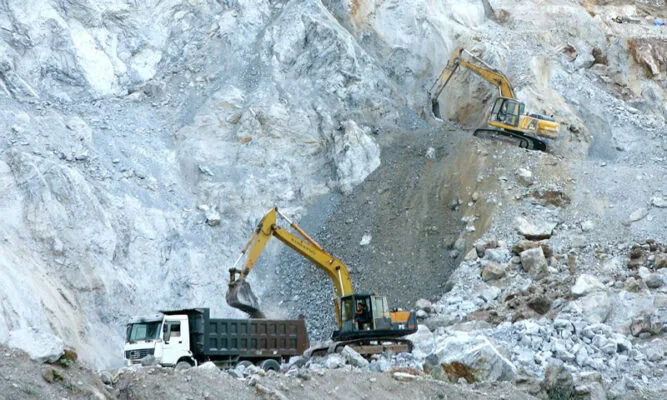
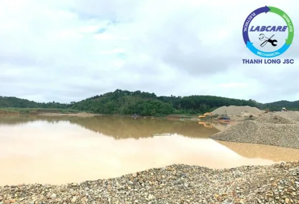
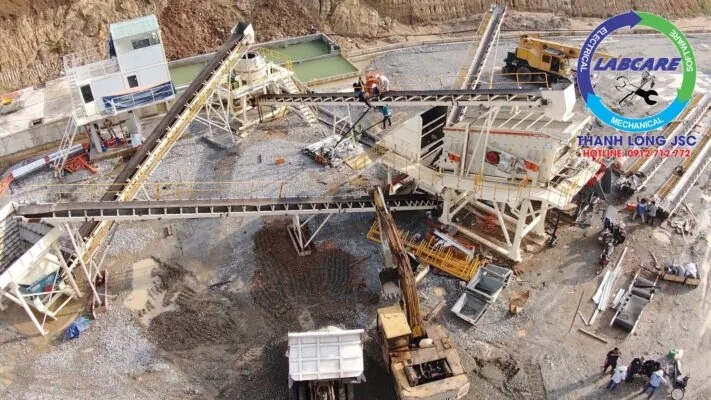
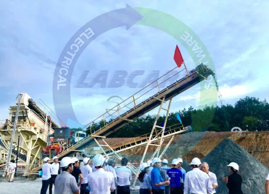
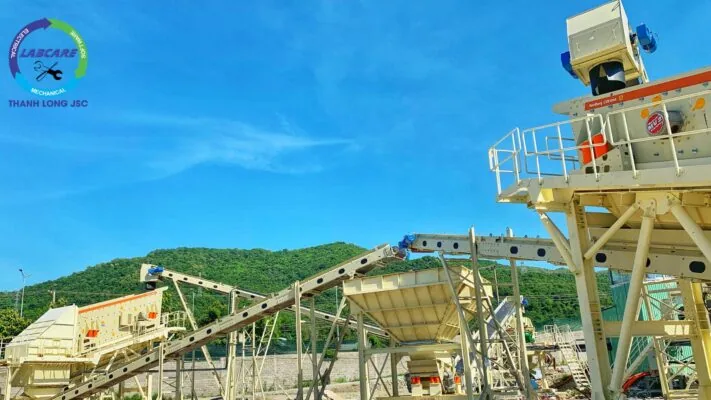

Theo lộ trình giai đoạn từ năm 2020 – 2022, chấm dứt hoàn toàn việc sử dụng cát tự nhiên làm vật liệu san lấp, đã được UBND các Tỉnh chỉ đạo thông báo ngày 27/12/2018.
Cát nghiền module và công nghệ rửa cát tiêu chuẩn
Bắt đầu từ năm 2020, không sử dụng cát tự nhiên làm vật liệu xử lý nền móng. Nghiên cứu quy hoạch xây dựng các nhà máy sản xuất vật liệu xây dựng nhân tạo. Đảm bảo tiêu chuẩn kỹ thuật để đáp ứng nguồn cung cấp số lượng lớn sản phẩm mà thị trường yêu cầu.
Các công ty khai thác đá làm vật liệu xây dựng được Bộ TM – MT khuyến khích bổ sung thêm dây chuyền sản xuất cát nghiền module. Với tiêu chí đảm bảo tiêu chuẩn, phù hợp với công suất.
Cụ thể, áp dụng đối với các kết cấu bê tông có mác 200 trở xuống như bê tông lót, bê tông nền, vữa xây móng, bậc cấp… Khuyến khích sử dụng cát nghiền trong các kết cấu bê tông chịu lực của công trình. Dự kiến cuối năm 2022, Sở Xây dựng tham mưu UBND tỉnh điều chỉnh phù hợp, tổ chức đánh giá để đề ra mục tiêu cụ thể cho giai đoạn tiếp theo.

Giai đoạn từ năm 2023 – 2024, phấn đấu đẩy mạnh việc sử dụng cát nghiền. Sản lượng đáp ứng và đưa vào sử dụng khoảng 50% nhu cầu trên địa bàn toàn tỉnh. Dự kiến cuối năm 2024, tổ chức tổng kết, đánh giá để đề ra mục tiêu cụ thể cho giai đoạn tiếp theo.
Giai đoạn từ năm 2025 trở về sau sẽ được quy định sử dụng cát nghiền trong bê tông và vữa xây dựng.Từ sau năm 2026, trên địa bàn tỉnh sẽ đưa vào sử dụng trên 80% cát nghiền thay thế cát tự nhiên, hạn chế khai thác cát lòng sông.

Phạm vi ứng dụng :
Tiêu chuẩn này áp dụng cho cát nghiền module được sản xuất bằng cách nghiền. Các loại đá tự nhiên có cấu trúc đặc chắc đến các cỡ hạt đạt yêu cầu dùng để chế tạo bê tông và vữa.

Các phương pháp xác định tiêu chuẩn cho cát nghiền :
- Cát xây dựng – Phương pháp xác định hàm lượng sét
- Cát xây dựng – Phương pháp lấy mẫu
- Cốt liệu cho bê tông và vữa – Phương pháp thử . Xác định thành phần hạt
- Cốt liệu cho bê tông và vữa – Phương pháp thử. Xác định khả năng phản ứng kiềm
- Cốt liệu cho bê tông và vữa – Phương pháp thử . Xác định hàm lượng clorua
Yêu cầu kích thước cát nghiền :
Theo kích thước cũng như nhu cầu sử dụng thì cát nghiền được chia thành 2 loại là cát thô và cát mịn
- Cát mịn có module độ lớn trong khoảng 0.7-2.0mm
- Cát thô module độ lớn trong khoảng 2.0 -3.3mm
Một số tiêu chí kỹ thuật cơ bản của cát nghiền
- Sản phẩm cát nhân tạo được sản xuất ra phải đáp ứng được các tiêu chí kỹ thuật và tiêu chuẩn ASTM C-33 của Mỹ.
- Phải có module theo tiêu chuẩn, có tính linh hoạt, tính công tác bảo đảm chất lượng bê tông sau khi hoàn thiện.
- Phải có chất lượng hình dạng độ tròn, độ mịn cần thiết.
- Sản phẩm không lẫn các tạp chất hữu cơ, đất sét, gỗ mùn… ảnh hưởng tới quá trình đông kết của bê tông.
Công nghệ sản xuất cát nghiền theo module tiêu chuẩn

Để đáp ứng được các tiêu chuẩn về cát nghiền từ module kích thước dải hạt. Hàm lượng clorua, hàm lượng tạm chất, sét có trong cát và hàng loạt tiêu chuẩn khác thì “ Bài toán “ lựa chọn công nghệ sản xuất là một vấn đề “ Then Chốt “. Ở nước ta hiện nay đang sử dụng 2 công nghệ đó là khô và ướt. Tuy nhiên, việc sử dụng công nghệ tách khô thì được đánh giá không đạt hiệu quả và ít doanh nghiệp lựa chọn.
Công nghệ ướt sẽ giúp người dùng dễ dàng đáp ứng được yêu cầu về cát nghiền. Sản phẩm nguyên liệu đầu vào đảm bảo được loại bỏ tạp chất trước khi qua hệ thống phân ly, rung tách để thu cát thô và cát mịn.
Máy rửa cát theo module
Máy rửa cát McLanahan dòng UltraWASH hiện đại nhất thế giới, hiện đã có mặt tại Việt Nam. Máy rửa cát McLanahan siêu sạch dòng UltraWASH được thiết kế và lắp sẵn các hệ thống dây điện, module, giúp việc lắp đặt và vận hành nhanh chóng. Cải thiện năng suất và chất lượng sản phẩm đầu ra.
Là loại máy duy nhất trên thế giới có thể tạo ra module cát theo ý muốn của khách hàng.
Là dòng UltraWASH được thiết kế và lắp sẵn các hệ thống dây điện, module, giúp việc lắp đặt và vận hành nhanh chóng.
Có sàng thao tác, lan can và cầu thang đã bao gồm đầy đủ kèm theo máy.
Đặc điểm và nguyên lý hoạt động của máy rửa cát McLanahan dòng UltraWash:

- Hệ thống được bảo vệ khỏi vật liệu đầu vào quá cỡ bởi lưới nghiêng hoặc lưới nghiêng thủy lực.
- Nguồn nguyên liệu vào phễu chứa được trộn tự do với nước.
- Sàng rung phân loại vật liệu thành các thành phần đá và cát
- Cửa trộn bên trong phễu thu liệu của sàng cho phép các sản phẩm đá kết hợp lại với nhau.
- Tính năng phối trộn thành phần hạt cát bằng cách tăng hoặc giảm thành phần cát mịn. Dễ dàng cho các ứng dụng cần thiết cho việc tạo module cỡ hạt cát.
- Cát và nước bùn được bơm từ bể chứa qua hai Hydrocyclones.
- Việc tái sử dụng nước tràn sẽ tối ưu lượng nước sạch cần cho việc rửa cát.
- Sản phẩm đầu ra từ dòng chảy bên dưới được xả vào một sàng tách nước.
- Sản phẩm chính cuối cùng được trộn giữa hai loại cát được lọc ra ngoài sàng tách nước.
- Phễu cấp liệu dạng băng tải gấp
- Tính năng cửa thăm của bể chứa giúp dễ dàng bảo dưỡng.
- Hệ thống Eze-Riser giúp nâng và khóa ống ở trên cao để dễ dàng tiếp cận với ống bơm.

Ứng dụng của máy rửa cát Mclanahan
Hiện nay máy rửa cát của Mclanahan được sử dụng rộng rãi ở hầu hết các mỏ cát nghiền, cát đồi hay cát rửa từ sông suối hồ cho hiệu quả rất cao.
Công ty THANH LONG JSC chuyên cung cấp dây chuyền nghiền đá và cát, máy rửa cát, máy tách cát mịn, máy nghiền côn, kẹp hàm, băng tải, sàng rung, máy nghiền cát nhân tạo VSI, vật tư trạm nghiền chính hãng với giá tốt nhất. THANH LONG JSC đã lắp đặt hơn 45 trạm nghiền từ công suất 50 khối/h đến 750 khối/h.
Hãy nhanh tay gọi cho chúng tôi theo sdt: 091- 2712- 772 để được tư vấn giải pháp đầu tư tiết kiệm và hiệu quả nhất.